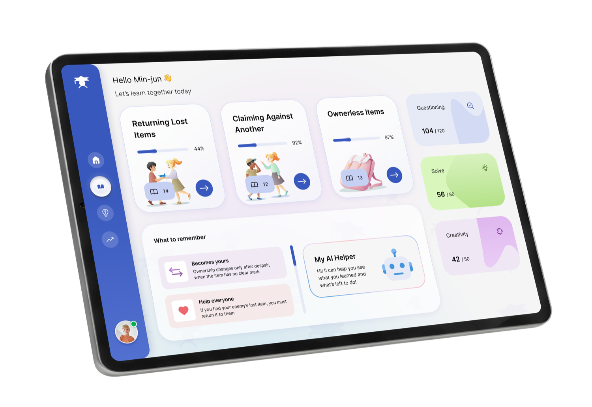
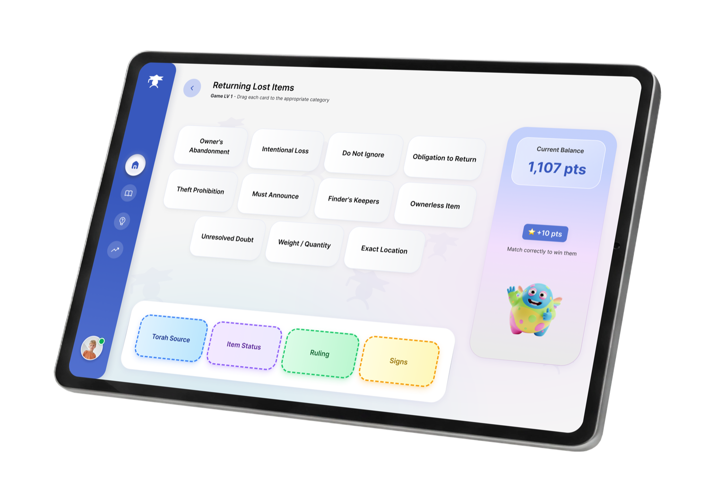

Talmind: bringing authentic Talmud study to Korean classrooms
The Koreans believe that studying the Talmud is the main reason for the success and wisdom of the Jews, pointing to the fact that they account for 25% of Nobel Prize winners, despite making up only 0.2% of the world's population.
Source: The Times of Israel
Overview
Talmind is a tablet app designed to bring authentic Talmud study to elementary, middle, and high school classrooms in Korea to help them acquire and adopt a Jewish mindset.


Private from here on
The rest of this project is confidential
Talmind is a live pilot, so the full case study is shared on request. If it is of interest, I am glad to open it: ask for access and a password is on its way.
Ask Yehuda and view it right now